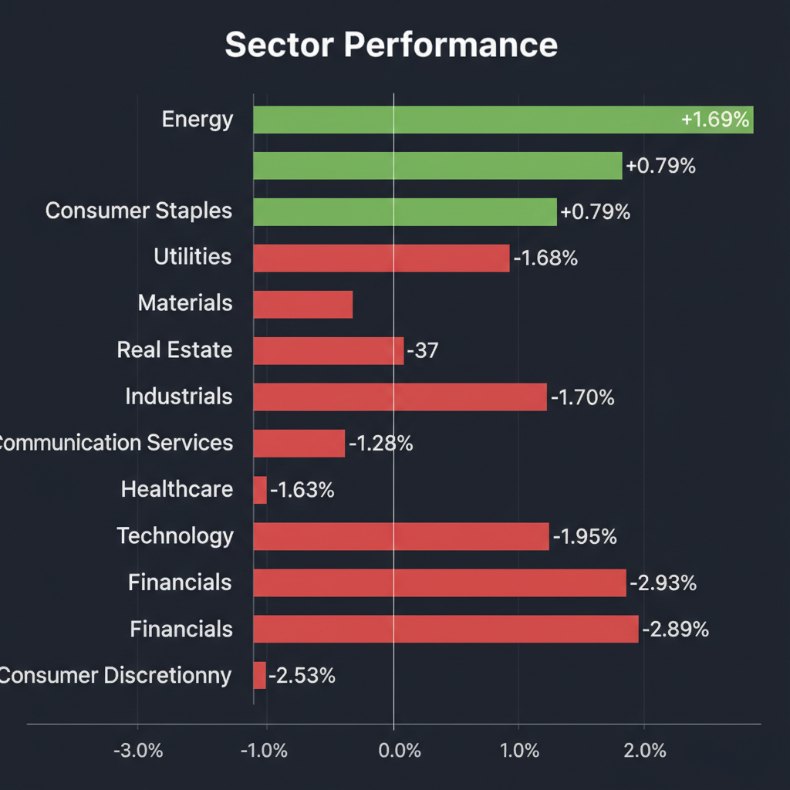
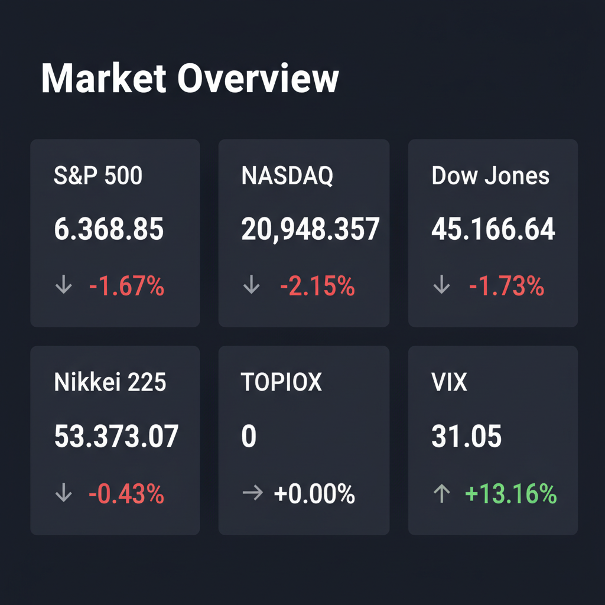

Daily Investment Report - 2026-03-28
Generated: 2026/3/28 8:16:29


本日の投資チームミーティングにおける各エージェント（ファンダメンタルズ、マクロ、テクニカル、リスク管理、グロース）の多角的な分析を統合し、投資家の皆様が即座にアクションを取れるようまとめた最新の投資レポートをお届けします。
1. エグゼクティブサマリー
- 中東の地政学リスクと原油価格の高騰（100ドル台）により、インフレ再燃と景気後退が同時進行する「スタグフレーション」への警戒が強まり、米国・日本市場ともに明確なリスクオフ（調整局面）に突入しています。
- VIX指数が31を超えるパニック的なボラティリティ環境下にあるため、全体相場への安易な押し目買いは避け、まずは現金比率を高めてポートフォリオの防衛（サバイバル）を最優先すべき局面です。
- 一方で、このマクロの嵐の中でも国家予算が不可逆的に流入する「サイバーセキュリティ・防衛・宇宙インフラ」関連の優良中小型株には、不当な売りを拾う絶好のエントリーチャンスが到来しつつあります。
2. 注目銘柄リスト
大型ハイテク株のバリュエーションが圧迫される中、独自の成長ストーリーと割安さを併せ持つ中小型株・隠れた成長株を中心に選定しました。
強気（買い推奨）
- Redwire Corporation (RDW) [時価総額: 約3億〜4億ドル]: 宇宙空間での3Dプリントや展開可能構造物に特化したニッチリーダーであり、防衛インフラ需要の急増を背景に黒字化の道筋を示している極めて有望な隠れた成長株です。
- Telos Corporation (TLS) [時価総額: 約2億〜3億ドル]: 米国防総省（DoD）やCIAなど政府機関向けのサイバーセキュリティに特化しており、国家主導のハッキング脅威が高まる中、巨大な潜在市場に対して著しく割安に放置されています。
- QPS研究所 (5595) [時価総額: 約500億〜600億円]: 夜間や悪天候でも地表を観測できる小型SAR衛星を展開し、地政学リスク下での監視強化という西側諸国の防衛ニーズを直接取り込める破壊的イノベーション企業です。
- ソリトンシステムズ (3040) [時価総額: 約300億円]: IT統制やサイバーセキュリティのテーマに乗りつつ、実質無借金かつ高い営業利益率を誇り、ファンダメンタルズの安全マージンが確保されている堅実な中小型株です。
中立（様子見）
- レゾナック・ホールディングス (4004) [時価総額: 約6,500億円]: 「ROE15%目標」など資本効率改善のファンダメンタルズは高く評価できますが、日経平均先物の暴落など全体相場の地合い悪化に引きずられる公算が大きいため、底打ちを確認するまで静観が妥当です。
- Micron Technology (MU) [時価総額: 約1,000億ドル超]: 大規模な売りが報じられており、半導体特有の市況サイクルの罠を避けるため、在庫回転率の改善と持続的なフリーキャッシュフローの回復がデータとして確認できるまでは手出し無用です。
弱気（警戒）
- エイチ・アイ・エス (9603) [時価総額: 約1,300億円]: 地政学リスクによる旅行需要の減退と原油高がダブルパンチとなり、固定費比率の高い事業構造上、キャッシュフローが急激に悪化する典型的なバリュートラップの疑いがあります。
- MicroStrategy (MSTR) [時価総額: 約300億ドル]: VIXが急騰するボラティリティ相場において、有利子負債を増やして非事業資産（ビットコイン）を買い増す戦略は、本業の企業価値評価を無意味にし、下値リスクの算定が不可能な破滅的リスクを抱えています。
3. セクター推奨ランキング
1.
防衛・航空宇宙・サイバーセキュリティ: マクロ経済や金利動向に左右されず、国家の安全保障インフラとして予算増額が不可逆的であるため、最も確実な資金流入が見込めます。
2.
エネルギー（上流工程・E&P限定）: 原油価格100ドル乗せの恩恵を直接受けます。ただし、バイオ燃料規制やコスト増に苦しむ「精製業者」や「油田サービス」は避け、純粋な探鉱・生産企業に絞る必要があります。
3.
ディフェンシブ（公益・生活必需品）: スタグフレーション警戒と金利高止まりが意識される中、業績のボラティリティが低く、配当利回りが期待できる堅実な避難先として機能します。
4.
【回避推奨】一般消費財・石油化学（ナフサ依存）: インフレによる実質所得の目減りと、中東からの原油供給不安に伴う深刻なコストプッシュ圧力（粗利率の圧迫）を直接受けるため、ポートフォリオから外すべきです。
4. 今週の注目イベント
- 今週金曜日: 米国の和平案に対するイランからの回答（市場の短期的なボラティリティを決定づける最重要イベント）
- 近日発表予定: 米雇用統計およびCPI（消費者物価指数）の発表（インフレ再燃とFRBの利上げ再開リスクを見極める指標）
5. リスク要因
- ホルムズ海峡の封鎖と原油急騰リスク: イランが和平案を拒絶し海峡封鎖に至った場合、原油価格が未知の領域（150ドル超）へ突入し、世界的なインフレと物流停止を引き起こすリスク。
- 中央銀行の政策エラーと信用収縮: インフレ再加速によりFRBが「利上げ再開」に追い込まれ、商業不動産（CRE）や地方銀行の含み損が顕在化し、リーマン・ショック型の信用収縮（クレジット・クランチ）が起きるリスク。
- アルゴリズムによる強制ロスカットの連鎖: VIX指数が30を超えるパニック領域にあるため、テクニカルな下値支持線（NASDAQの52週線など）を割り込んだ瞬間に機械的な投げ売りが加速するリスク。
- サイバーテロによる市場機能の停止: 国家主導のハッカー集団による米国金融インフラへの攻撃により、取引所や決済ネットワークがブラックアウトするテールリスク。
6. アクションアイテム
- 現金比率（流動性の高い短期米国債など）を速やかにポートフォリオの30%〜50%まで引き上げ、最悪のシナリオに備えた防御態勢を構築する。
- 全体相場（インデックス）への新規の押し目買いは絶対に見送り、チャート上で「ダブルボトム」や「長い下ヒゲ」などの明確な底打ちシグナルが出現するまで待機する。
- 既存のポジションについては、ボラティリティ拡大（日々の値幅増）に合わせてポジションサイズを平時の半分以下に落とし、その分ストップロスの幅を広く取る資金管理を実行する。
- 新規資金を投じる場合は、全体相場と相関しにくい「防衛・サイバーセキュリティ関連」のニッチトップ中小型株（RDW、TLSなど）に限定し、厳格な損切りラインを設けた上で選別投資を行う。